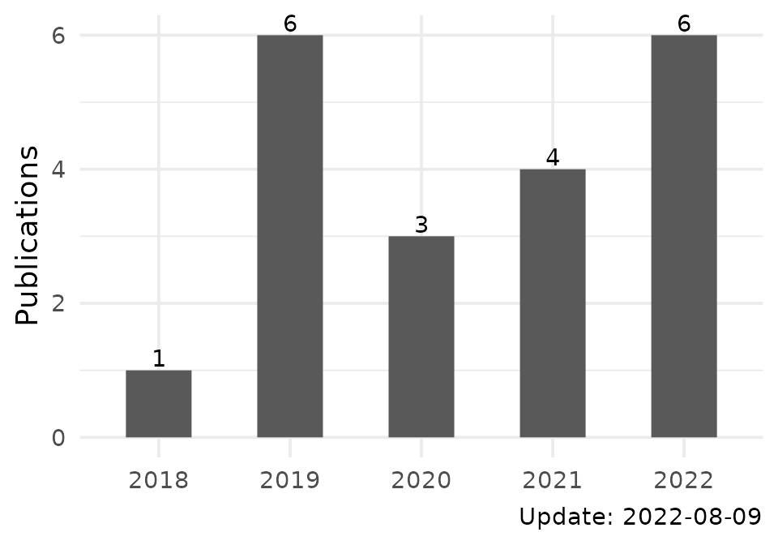

The goal of tinyscholar is to provide a simple way to get and show Google scholar profile.
Installation
You can install the released version of tinyscholar from CRAN with:
install.packages("tinyscholar")And the development version from GitHub with:
# install.packages("devtools")
devtools::install_github("ShixiangWang/tinyscholar")
# devtools::install_git("https://gitee.com/ShixiangWang/tinyscholar")Usage
Here I will use my profile as an example.
Get You Google Scholar ID
Firstly, you need to get your Google scholar ID from URL of your Google scholar profile or by running the following function with a keyword:
scholar_search("Shixiang Wang")
#> Searching author Shixiang Wang
#> Using API server: https://api.scaleserp.com
#> Using Shixiang's personal API key, only 125 free searches per month for all packages users
#> Search times used: 38
#> Search times left: 87
#> id
#> 1 FvNp0NkAAAAJ
#> desc
#> 1 Wang, Shixiang (王诗翔)ShanghaiTech. UniversityVerified email at shanghaitech.edu.cnCited by 127Copy your ID and go to the next step.
Get Personal Profile
Then you can use function tinyscholar() to get the tidy data, which is a list of two data.frame with added profile class.
profile <- tinyscholar("FvNp0NkAAAAJ")
#> Using cache directory: /tmp/RtmpUxnSX9/tinyscholar
#> Cannot find cache file /tmp/RtmpUxnSX9/tinyscholar/unsorted_2022-08-09_FvNp0NkAAAAJ.rds
#> Try quering data from server: hiplot
#> Timeout/error when use hiplot server. Switch to use the server: cse.
#> Save data to cache file /tmp/RtmpUxnSX9/tinyscholar/unsorted_2022-08-09_FvNp0NkAAAAJ.rds
#> Done
str(profile, max.level = 1)
#> List of 2
#> $ publications:'data.frame': 20 obs. of 5 variables:
#> $ citations :'data.frame': 6 obs. of 2 variables:
#> - attr(*, "class")= chr [1:2] "ScholarProfile" "list"You can use this data in your way. The following parts provide two simple ways to show the profile.
Show Table
Table is the best way to show the scholar profile. Tinyscholar uses gt package to generate tables which can be easily modified.
tb <- scholar_table(profile)
tb$citations| Citations | |
|---|---|
| when | count |
| total | 509 |
| 2018 | 2 |
| 2019 | 36 |
| 2020 | 117 |
| 2021 | 195 |
| 2022 | 154 |
| Update: 2022-08-09 | |
| Publications | ||||
|---|---|---|---|---|
| title | authors | venue | citations | year |
| APOBEC3B and APOBEC mutational signature as potential predictive markers for immunotherapy response in non-small cell lung cancer | S Wang, M Jia, Z He, XS Liu | Oncogene 37 (29), 3924-3936, 2018 | 144 | 2018 |
| Antigen presentation and tumor immunogenicity in cancer immunotherapy response prediction | S Wang, Z He, X Wang, H Li, XS Liu | eLife, 2019 | 133 | 2019 |
| Sex Differences in Cancer Immunotherapy Efficacy, Biomarkers, and Therapeutic Strategy | S Wang, LA Cowley, XS Liu | Molecules 24 (18), 3214, 2019 | 84 | 2019 |
| The predictive power of tumor mutational burden in lung cancer immunotherapy response is influenced by patients' sex | S Wang, J Zhang, Z He, K Wu, XS Liu | International journal of cancer 145 (10), 2840-2849, 2019 | 47 | 2019 |
| The UCSCXenaTools R package: a toolkit for accessing genomics data from UCSC Xena platform, from cancer multi-omics to single-cell RNA-seq | S Wang, XS Liu | Journal of Open Source Software 4 (40), 1627, 2019 | 29 | 2019 |
| Copy number signature analysis tool and its application in prostate cancer reveals distinct mutational processes and clinical outcomes | S Wang, H Li, M Song, Z Tao, T Wu, Z He, X Zhao, K Wu, XS Liu | PLoS genetics 17 (5), e1009557, 2021 | 21 | 2021 |
| UCSCXenaShiny: an R/CRAN package for interactive analysis of UCSC Xena data | S Wang, Y Xiong, L Zhao, K Gu, Y Li, F Zhao, J Li, M Wang, H Wang, ... | Bioinformatics 38 (2), 527-529, 2022 | 18 | 2022 |
| Copy number signature analyses in prostate cancer reveal distinct etiologies and clinical outcomes | S Wang, H Li, M Song, Z He, T Wu, X Wang, Z Tao, K Wu, XS Liu | medRxiv, 2020 | 8 | 2020 |
| Ras downstream effector GGCT alleviates oncogenic stress | Z He, S Wang, Y Shao, J Zhang, X Wu, Y Chen, J Hu, F Zhang, XS Liu | Iscience 19, 256-266, 2019 | 8 | 2019 |
| Sigflow: an automated and comprehensive pipeline for cancer genome mutational signature analysis | S Wang, Z Tao, T Wu, XS Liu | Bioinformatics 37 (11), 1590-1592, 2020 | 6 | 2020 |
| Hiplot: A comprehensive and easy-to-use web service boosting publication-ready biomedical data visualization | J Li, B Miao, S Wang, W Dong, H Xu, C Si, W Wang, S Duan, J Lou, Z Bao, ... | bioRxiv, 2022 | 4 | 2022 |
| Pan-cancer noncoding genomic analysis identifies functional CDC20 promoter mutation hotspots | Z He, T Wu, S Wang, J Zhang, X Sun, Z Tao, X Zhao, H Li, K Wu, XS Liu | Iscience 24 (4), 102285, 2021 | 2 | 2021 |
| Can tumor mutational burden determine the most effective treatment for lung cancer patients? | S Wang, Z He, X Wang, H Li, T Wu, X Sun, K Wu, XS Liu | Lung Cancer Management 8 (4), LMT21, 2019 | 2 | 2019 |
| Ggct (γ‐glutamyl cyclotransferase) plays an important role in erythrocyte antioxidant defense and red blood cell survival | Z He, X Sun, S Wang, D Bai, X Zhao, Y Han, P Hao, XS Liu | British Journal of Haematology 195 (2), 267-275, 2021 | 1 | 2021 |
| Association of CSMD1 with Tumor Mutation Burden and Other Clinical Outcomes in Gastric Cancer | X Wang, S Wang, Y Han, M Xu, P Li, M Ke, Z Teng, P Huang, Z Diao, ... | International Journal of General Medicine 14, 8293, 2021 | 1 | 2021 |
| Revisiting neoantigen depletion signal in the untreated cancer genome | S Wang, X Wang, T Wu, Z He, H Li, X Sun, XS Liu | bioRxiv, 2020 | 1 | 2020 |
| Deciphering clonal dynamics and metastatic routines in a rare patient of synchronous triple-primary tumors and multiple metastases with MPTevol | Q Chen, QN Wu, YM Rong, S Wang, Z Zuo, L Bai, B Zhang, S Yuan, ... | Briefings in Bioinformatics, 2022 | 0 | 2022 |
| Quantification of neoantigen-mediated immunoediting in cancer evolution. | T Wu, G Wang, X Wang, S Wang, X Zhao, C Wu, W Ning, Z Tao, F Chen, ... | Cancer Research, 2022 | 0 | 2022 |
| Onlinemeta: A Web Serve For Meta-Analysis Based On R-shiny | Y Yi, A Lin, C Zhou, J Zhang, S Wang, P Luo | bioRxiv, 2022 | 0 | 2022 |
| Pan-cancer quantification of neoantigen-mediated immunoediting in cancer evolution | T Wu, G Wang, X Wang, S Wang, X Zhao, C Wu, W Ning, Z Tao, F Chen, ... | bioRxiv, 2022 | 0 | 2022 |
| Update: 2022-08-09 | ||||
Show Plot
Similarly, you can show numeric data with ggplot2 package.
pl <- scholar_plot(profile)
pl$citations
pl$publications
Similar R package
R package scholar is a more comprehensive package to get and visualize the Google scholar profile. However, tinyscholar is lightweight and not limited in China.